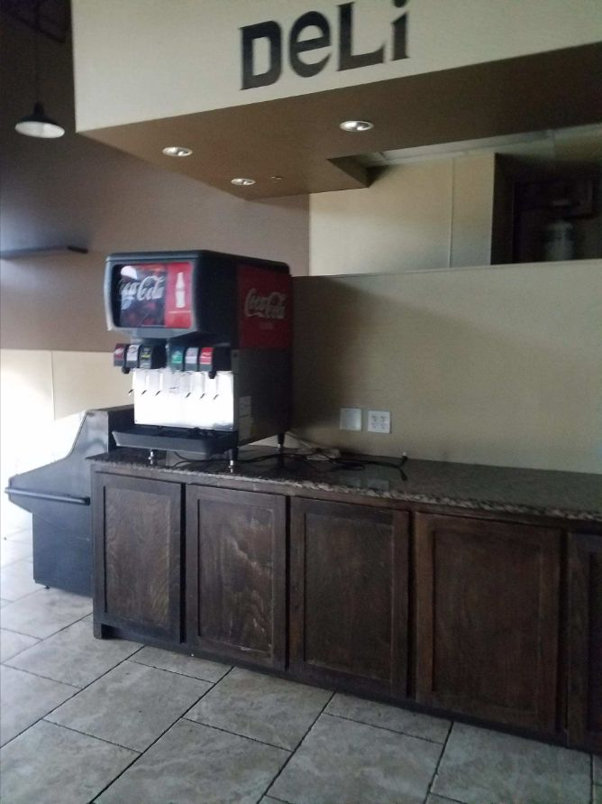

Durability depends on the actual traffic
Entry zones, service areas and offices place different demands on finishes. Compare the specified product’s approved commercial use, maintenance and replacement access with the daily operation.
Cedar Hill, Texas
Commercial tenant improvements, interior build-outs, renovations and coordinated construction for offices, retail, restaurants, medical spaces and managed properties across the Dallas-Fort Worth area.
Commercial construction / Cedar Hill, Texas
For commercial construction in Cedar Hill, this guide focuses on durability depends on the actual traffic. Use it to discuss the conditions at your property and compare the proposed work.
Entry zones, service areas and offices place different demands on finishes. Compare the specified product’s approved commercial use, maintenance and replacement access with the daily operation.
If the property remains in use, agree on protected routes, room access, material storage and the point at which each area can be used again. The work plan should identify who moves belongings and how the construction area is separated.
Armstrong Ceiling Solutions
Acoustical panels and suspension grids can support access and sound-control goals in selected commercial spaces.
Selection check
Coordinate the exact panel and grid with lights, sprinklers, air devices, humidity exposure and any required rated assembly.
Warranty and performance depend on the selected panel and grid system; acoustic ratings are not a guarantee of complete sound isolation.

USG Sheetrock
Gypsum panels provide interior wall and ceiling surfaces. Moisture-resistant and fire-rated products have specific applications.
Selection check
Match thickness, framing, fasteners and assembly requirements. Moisture resistance does not make a board waterproof or suitable for every wet location.
Use the selected panel documentation and applicable USG warranty; no universal term applies to every panel or wall assembly.

Mohawk RevWood
Laminate flooring combines a decorative surface and engineered core; suitability varies by product and installation conditions.
Selection check
Identify the exact RevWood collection, approved underlayment, subfloor moisture limits, expansion space and wet-area restrictions.
Coverage varies by collection. Read the selected residential or commercial warranty; water-related marketing does not cover every flood or plumbing loss.

Luna project reference
Existing Luna portfolio photograph from Dallas–Fort Worth. It is not a product photograph or a claim that the work was completed in this page’s city.
Explore documented project work →Entry zones, service areas and offices place different demands on finishes. Bring photographs, dimensions and any relevant previous repair records to the discussion.
Compare acoustical ceiling systems, gypsum wall and ceiling panels, laminated wood flooring. Specify the selected components and the preparation they require.
Match each finish to its zone and cleaning routine. The work plan should identify who moves belongings and how the construction area is separated.
Include a room sequence, daily access route, protection responsibilities and a handoff before each area is returned to use. Confirm these details against the actual scope rather than assuming every phase can happen around normal occupancy.
Match each finish to its zone and cleaning routine. The written scope should also identify the selected products, work boundaries, required trade coordination and approval steps for changes.
No. These are references for comparing product categories. Availability, suitability, the exact model and the actual supplier must be confirmed for the property. A reference does not imply certification, stock or a brand affiliation.
Manufacturer coverage: Terms apply to the exact product and eligible application. Material coverage, complete-system programs and installation workmanship are different obligations. Request the current written warranty and care instructions; a warranty term is not a guaranteed service life. Generic illustrations are original explanatory artwork, not branded packaging.
Discuss the conditions at your property.
Include the project address, relevant photos and your priorities.
Entry zones, service areas and offices place different demands on finishes. Compare the specified product’s approved commercial use, maintenance and replacement access with the daily operation.
If the property remains in use, agree on protected routes, room access, material storage and the point at which each area can be used again. The work plan should identify who moves belongings and how the construction area is separated.
Scheduling, access, protection, materials, trade coordination, cleanup and any hidden conditions are reviewed before work begins.
We work on offices, retail spaces, restaurants, medical and professional suites, managed properties and other small to mid-size commercial facilities.
Yes. We can coordinate framing, drywall, acoustical ceilings, painting, flooring, carpentry and approved plumbing, electrical and HVAC work under one project schedule.
Yes. The work can be phased around business operations when practical, with attention to access, dust control, daily cleanup and communication with property management.
Yes. Commercial restroom work can include layout changes, framing, drywall, tile, fixtures, grab bars, clearances and coordination with applicable permit and inspection requirements.
Many tenant improvements and build-outs require permits and inspections depending on the city and scope. Permit needs should be confirmed before construction begins.
Yes. Luna General Contractors serves homes and businesses throughout Cedar Hill and nearby communities.
Professional, reliable and detail-oriented from planning through completion. The craftsmanship and finished work exceeded expectations.
Read review summary · Source: Google →Top-notch communication, professionalism and attention to detail on a Jack-and-Jill bathroom renovation.
Read review summary · Source: Google →“Fair price for great work. Definitely recommend them for general repairs and maintenance.”
View public recommendation →Read customer feedback with the original source identified for every review.
View All Customer Reviews →Start Your Project
Tell us about your property and the work you have in mind. We can discuss the scope, access, material selections and next steps.